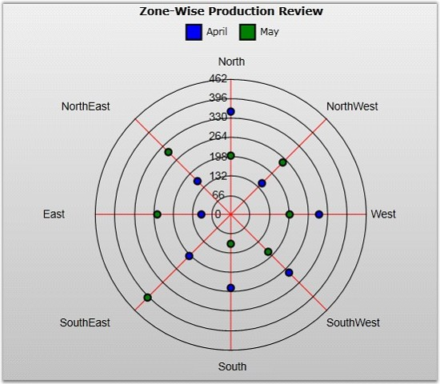

A Polar Chart is a circular graph in which data is displayed in terms of values and angles. The X values define the angles at which the data points will be plotted. The Y value defines the distance of the data points from the center of the graph, with the center of the graph usually starting at 0.
It is a form of graph that allows a visual comparison between several quantitative or qualitative aspects of a situation, and also allows a visual comparison between several situations that are drawn by using the same axes (poles).
The Polar chart supports all Clockwise, Anti-Clockwise draw axis line features.
The following attached properties are used to customize the Polar chart.
|
Attached Property |
Type |
Description |
|
IsClockWise |
bool |
Gets or set the Clockwise or anti-clockwise axis render. |
|
IsClosed |
bool |
Gets or sets whether starting and ending point gets joined. |
|
DrawType |
ChartPolarDrawType |
There is three option to draw Polar chart. They are Line, Area and Symbol. |
The following code example illustrates how to create a Polar Chart.
|
[XAML]
<syncfusion:ChartSeries Type="Polar" Label="April" Interior="Blue" Stroke="Black" StrokeThickness="2" DataSource="{StaticResource data1}" BindingPathX="ZoneName" BindingPathsY="Production" > </syncfusion:ChartSeries>
<syncfusion:ChartSeries Type="Polar" Label="May" Interior="Green" Stroke="Black" StrokeThickness="2" DataSource="{StaticResource data2}" BindingPathX="ZoneName" BindingPathsY="Production"> </syncfusion:ChartSeries> |
|
[C#]
ChartArea area = new ChartArea();
// Create Point and Figure Chart. ChartSeries series = new ChartSeries(); series.Type = ChartTypes.Polar; ChartSeries series2 = new ChartSeries(); series2.Type = ChartTypes.Polar;
// Initialize chart data. series.DataSource = this.Resources["data1"] as EarthData; series.BindingPathX = "StockDate"; series.BindingPathsY = new List<string>() { "High", "Low" };
series2.DataSource = this.Resources["data2"] as EarthData; series2.BindingPathX = "StockDate"; series2.BindingPathsY = new List<string>() { "High", "Low" };
area.Series.Add(series); area.Series.Add(series2); |
The following screenshot shows a Polar Chart with two Chart Series.

Figure 50: Polar Chart